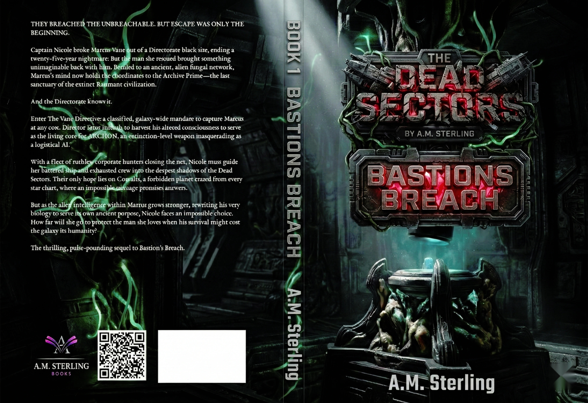

Bastion's Breach
Book One of The Dead Sectors
⚠ TRANSMISSION INTERRUPTED ⚠
STATUS: Manuscript Under Revision
PRIORITY: Editorial Review in Progress
CLEARANCE: Pre-Publication Hold
PRIORITY: Editorial Review in Progress
CLEARANCE: Pre-Publication Hold
[SIGNAL PAUSED]
This preview is currently undergoing critical revisions as the manuscript is refined for publication.
The story of Nicole and Marcus continues to evolve. New chapters. Deeper connections. A tighter conspiracy.
[STANDBY FOR UPDATED TRANSMISSION]
Signal will resume when editorial review is complete.